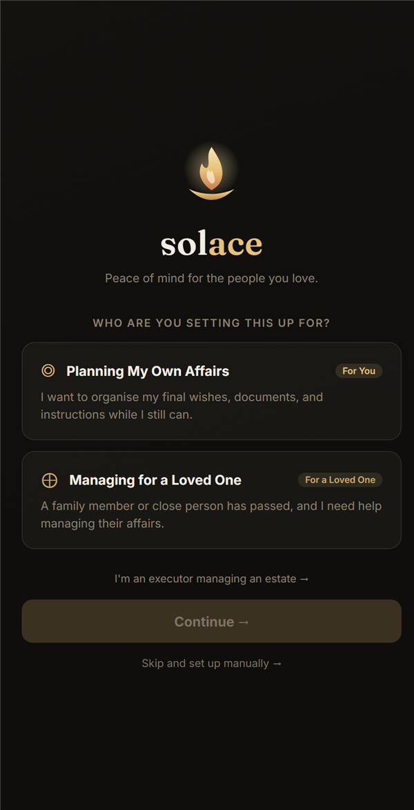
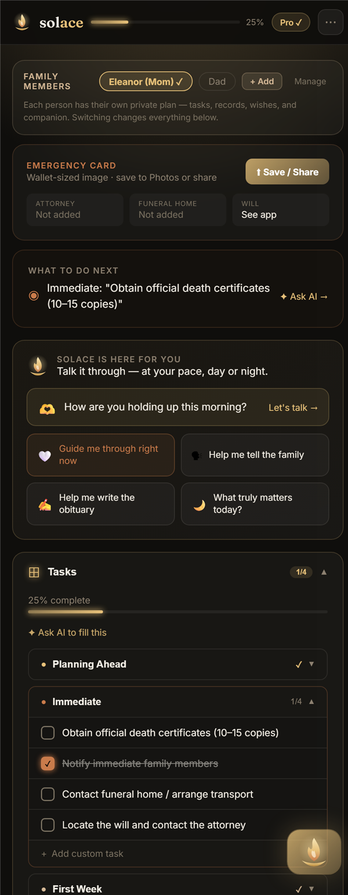
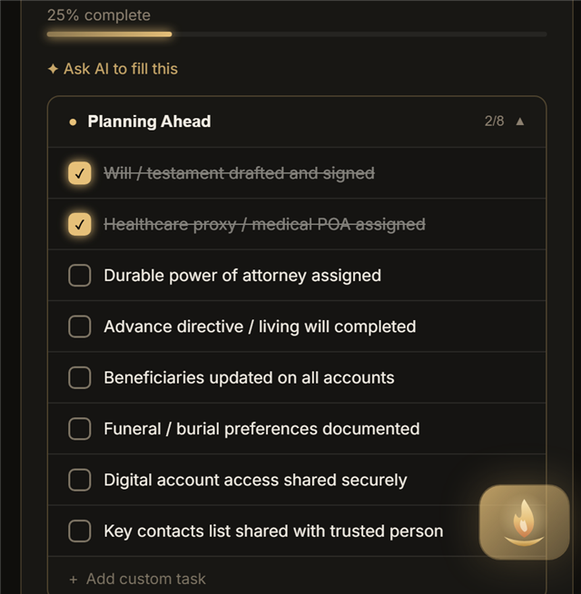
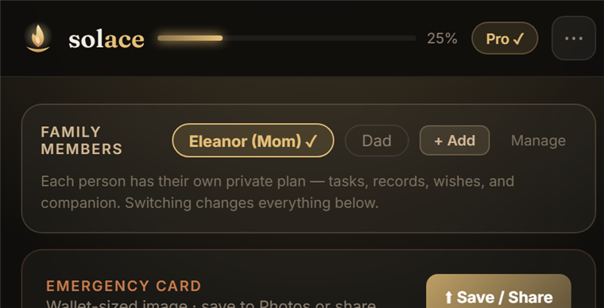

Solace is not another end-of-life checklist. It's a warm, AI-powered companion for life's hardest passages — preparing for the end of your own life, or carrying on after losing someone. It pairs a genuinely compassionate guide with everything practical: documents, wishes, contacts, and the dozens of tasks no one prepares you for.
Everything is private by default and works offline. The companion meets you where you are — leading with the heart, then helping with the paperwork, one gentle step at a time.
Putting your own wishes, documents, and instructions in order while you can — a profound act of love, made calm and unhurried.
You've lost someone. Solace becomes a steady first-responder: grounding, then walking you through the first hours, days, and weeks.
Acting as executor or administrator — an organized guide through a heavy, bureaucratic process, one priority at a time.

The heart of Solace. Not a chatbot or a form — the calm, kind presence you can turn to at 2am when it all feels like too much.
Leads with how you're holding up — validates the feeling before any task-talk. Never clinical, never "I understand how you feel."
A time-aware "How are you holding up?" that opens a supportive, no-pressure conversation — not another reminder to do something.
One tap to start: "I don't know where to begin," "Help me tell the children," "Write a goodbye letter," "What do I do in the first 48 hours?"
In grief mode, a calm first-responder that walks you through right now — one small step at a time, nothing more.
Tell it something once and it quietly updates your plan — fills tasks, records contacts, drafts wishes — so you never re-type.
Carries the thread across sessions — who you are, your loved one, what's been hard — and references it warmly, per family member.

Structured, compassionate tools for the practical side — each one the companion can help you fill.
Phased for the moment you're in — Planning Ahead, the Immediate hours, the First Week, and the First Month — with custom tasks of your own. Free
Track where the will, trust, insurance, deeds, IDs and more live — status, location, and notes, so nothing is left to guesswork. Free
Attorney, funeral home, financial advisor, physician, clergy — everyone who matters, ready when the time comes. Free
Put final wishes into words — how you'd want to be remembered and cared for — with companion help when the words are hard. Free
A warm, dignified first draft generated from your details — refine it together. Free draft Pro re-gen
The urgent things loved ones need first — plus a wallet-sized emergency card you can save and share. Free Pro save
A clear ledger of accounts, policies, property and beneficiaries — so your executor isn't left guessing. Pro
Decide what happens to email, social, banking and subscriptions — memorialize, close, transfer, or delete. Pro
Write messages to be read later — the companion helps you find the opening words. Free
Record the rites and observances that matter for the service, so they're honored exactly. Free
Solace meets the moment you're in. Every task lives in one of four phases — so you're never facing all of it at once, and always know the next right thing to do.
Will, healthcare proxy, power of attorney, beneficiaries, and funeral preferences — the gifts you leave in order.
Death certificates, notifying family, contacting the funeral home, and securing the home and pets.
Social Security, life insurance, employer & pension, probate, banks, and the obituary.
Utilities, subscriptions, the VA, final taxes, the DMV, property titles, and distributing belongings.

Store the will, deeds, insurance and IDs encrypted on your device. Protected by a passphrase only you know, with a one-time recovery code. Pro
Your plan lives locally first and keeps working with no connection. Sensitive fields are encrypted; nothing sensitive is required to leave your device. Free
Securely pick up where you left off across phone, tablet, and web — with conflict-safe merging. Pro
A periodic check-in and a six-month nudge to review your documents, so the plan stays current. Pro
A separate, private plan for each loved one — own tasks, records, wishes, documents and companion. Switch between them in a tap. Family
Name the people who can reach a plan when it's truly needed — on request (you're notified and can veto) or automatically if you stop checking in. Family
A spouse or sibling can help keep a plan up to date in real time. Family
Sharing is scoped to one family member at a time — granting access to Mom's plan never exposes Dad's or your own. Family

Start free. Every new member gets a 7-day trial of full Family access — including the Opus companion — automatically.
One Solace across phone, tablet, and browser — a native app with a held, branded splash and your plan in sync.
A warm "candlelight on dark" identity — built to feel calm and human in a moment that's anything but.